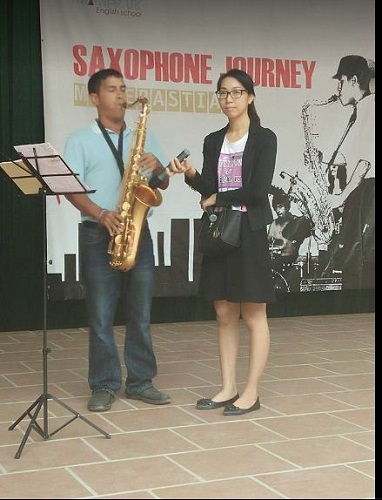
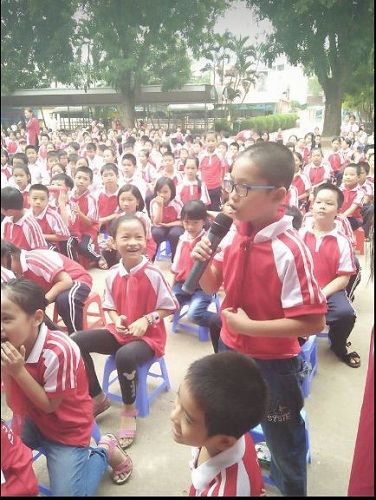
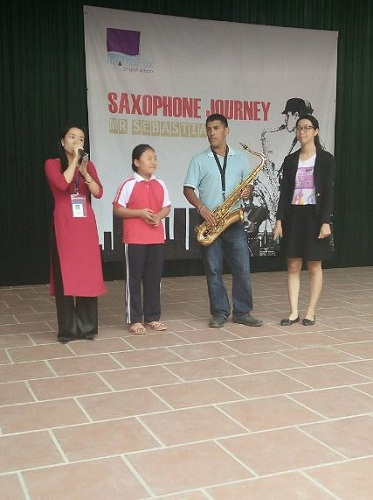
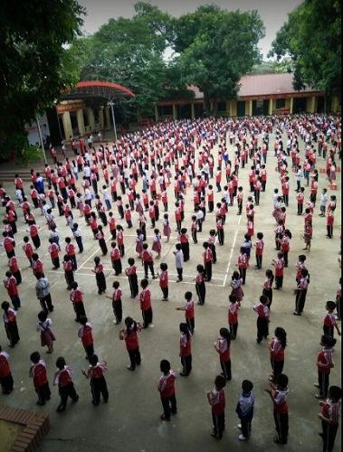
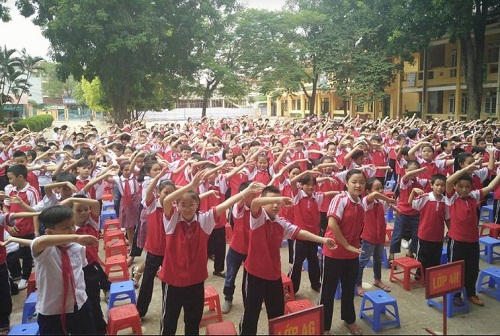

Giao lưu văn nghệ trong chuong trình saxophone journey
Trường Tiểu học Nha Trang tổ chức Giao lưu văn nghệ với Thầy giáo Sebastian trong chương trình “Saxophone journey”
Ngày 14/10 trường Tiểu học Nha Trang tổ chức buổi giao lưu văn nghệ với Nghệ sĩ kèn Saxophone Mr Sebastian đồng thời cũng là giáo viên Anh ngữ đến từ trung tâm Anh ngữ Thames UK. Đây là một hoạt động ngoại khóa nhằm tạo sân chơi cho học sinh, giúp các em làm quen với cây kèn saxophone và gần gũi hơn với các thầy cô giáo người bản ngữ, hiểu và yêu thích tiếng Anh đồng thời được thể hiện năng khiếu của bản thân mình một cách ấn tượng nhất. Tham dự buổi giao lưu có sự tham gia đầy đủ của Ban giám hiệu nhà trường, các thầy cô giáo và 1176 em học sinh trong nhà trường.
Mở đầu là tiết mục văn nghệ “ Khúc hát người giáo viên” của các cô giáo và học sinh kết hợp với tiếng kèn saxophone của thầy Sebastian đã làm nóng lên bầu không khí trong ngày giao lưu.Tiếp theo là các tiết mục đặc sắc của thầy giáo cùng với sự cổ vũ nhiệt tình của các em học sinh.

Trong phần giao lưu với khán giả, bằng sự hiểu biết của mình, các em học sinh đã xuất sắc trả lời các câu hỏi mà khách mời đưa ra để nhận được những phần quà hấp dẫn từ ban tổ chức.

Tiếp theo là sự kết hợp hài hòa giữa tiếng kèn saxophone với giọng hát ngọt ngào của các em trong bài hát “Mẹ yêu” và “Pround of you”.

Kết thúc buổi giao lưu là bài dân vũ ” Chicken dance” đầy sôi động và đáng yêu của học sinh toàn trường.


Những màn kết hợp hài hòa giữa thầy giáo Sebastian, các cô giáo và các em học sinh là điểm nhấn đặc biệt trong chương trình. Ngày Hội giao lưu đã để lại cho các em học sinh những ấn tượng khó quên, cho các em niềm hứng khởi trong học tập, niềm đam mê học hỏi môn tiếng Anh.
Tin và bài: Tổ Ngoại Ngữ